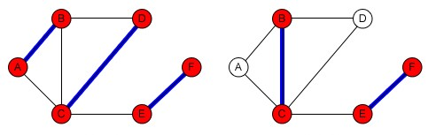
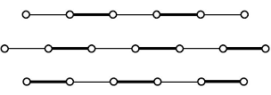
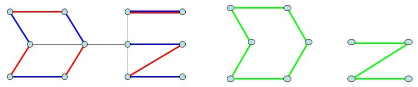
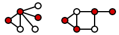
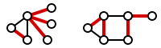
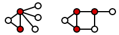
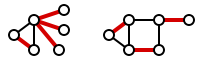

Introduction¶
A graph is a mathematical structure used to model pairwise relationships between objects. A graph consists of vertices (or nodes) connected by edges. Graphs are widely used in computer science, operations research, social sciences, and other fields to model networks, dependencies, and interactions.
In this chapter, we will become familiar with fundamental concepts of graph theory.
Code Example¶
# Read the set of vertices as a list of data
nodes = [1, 2, 3, 4]
# Read the set of edges as pairs of vertices
edges = [(1, 2), (2, 3), (3, 4), (4, 1)]
# Graph vertices
print("Vertices:", nodes)
# Graph edges
print("Edges:", edges)

A graph can be represented visually, as shown in the image above, or through mathematical notation and data structures like adjacency lists or matrices.
Definition¶
A matching is a set of edges where no two edges share a common vertex.
In mathematical terms, if we consider a graph \(G\) with edge set \(E\), a matching or an independent set of edges is a subset of \(E\) where no two elements share a common vertex in \(G\), denoted by \(M\).
A vertex that is an endpoint of an edge in the matching of graph \(G\) is called a saturated (matched) vertex; otherwise, it is called an unsaturated (unmatched) vertex.
{kind=link}

Maximal and Maximum Matchings
------------------------------
A maximal matching in a graph :math:`G` is a matching such that adding any other unmatched edge from :math:`G` would result in a set that is no longer a matching. In other words, a matching :math:`M` is maximal if every edge in :math:`G` intersects with at least one edge in :math:`M`.
A maximum matching is a matching that contains the largest possible number of edges from :math:`G`. Therefore, every maximum matching is also a maximal matching, but not every maximal matching is necessarily a maximum matching.
A perfect matching is a matching where all vertices are saturated (i.e., the number of edges equals :math:`|G| / 2`). It can also be easily observed that a maximal matching has at least half as many edges as a maximum matching.
.. figure:: /_static/matchings.png
:width: 50%
:align: center
:alt: اگه اینترنت یارو آشغال باشه این میاد
An alternating path is a path whose edges alternately belong to the matching and are outside the matching.
An augmenting path is an alternating path whose first and last vertices are unsaturated (not part of the matching).
{kind=link}

A matching is maximum if and only if it has no augmenting path—a conclusion known as Berge's theorem.
To prove that a maximum matching has no augmenting path, assume for contradiction that an augmenting path exists. Since an augmenting path is alternating and its first and last vertices are unsaturated, we can remove the matching edges along this path from the matching and replace them with the non-matching edges of the path. Because the first and last vertices are unsaturated, the number of non-matching edges in any augmenting path is exactly one more than the number of matching edges. Thus, the matching size increases by one, creating a larger matching, which contradicts the assumption that the original matching was maximum. Hence, a maximum matching cannot have an augmenting path.
The converse—that a matching with no augmenting path is maximum—can also be proven by contradiction: Suppose \(M'\) is a maximal matching with no augmenting path, and \(M\) is a maximum matching. Consider the graph \(M \Delta M'\) (symmetric difference). The degree of every vertex in this graph is at most two, so it consists of disjoint cycles and alternating paths. In cycles and even-length paths, the number of edges from both matchings is equal. In odd-length paths, the first and last edges must belong to \(M\); otherwise, we could replace edges of \(M\) in the path with edges from \(M'\) to increase the matching size, contradicting maximality. Hence, the existence of an odd-length path implies an augmenting path, which is a contradiction. Therefore, no odd-length paths exist, and \(|M| = |M'|\).
{kind=link}

Vertex and Edge Covers¶
A vertex cover is a (covering) set of vertices where every edge has at least one endpoint in this set.
{kind=link}

An edge cover is a (covering) set of edges where every vertex has at least one adjacent edge in this set.
{kind=link}

A minimum vertex cover is a vertex cover with the smallest number of vertices, and a minimum edge cover is an edge cover with the smallest number of edges.
{kind=link}

{kind=link}

This book is made by The Shaazzz contributors.
It is publicly available with cc-by-sa license.
Last updated at سپتامبر 30, 2025.
Rendered by Sphinx (4.3.2) and Minoo theme (Beta 0.9.7).